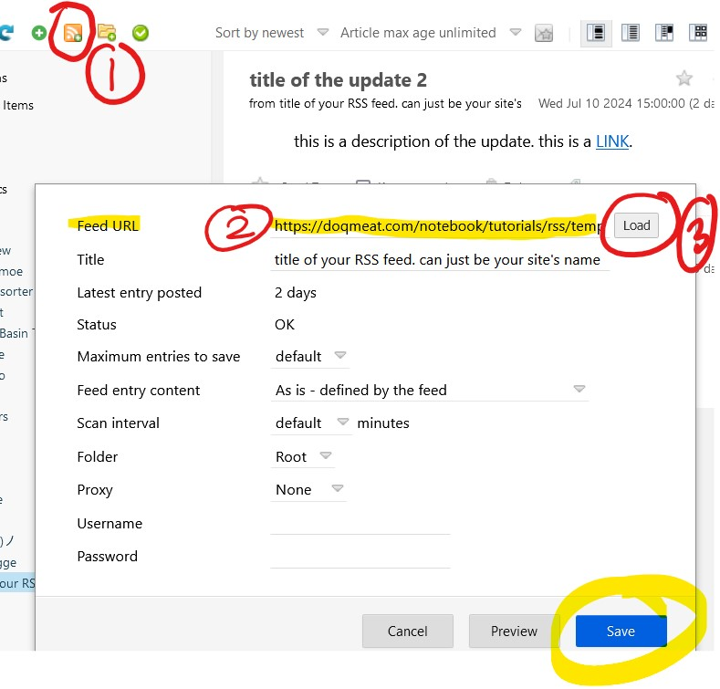
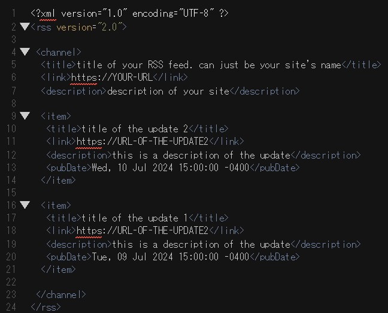

RSS feeds
table of contents:
intro
while the neocities activity feed sort of gets the job done at keeping you updated with other sites, there are other ways of getting updates from websites right to your doorstep. with this method, you can also see updates from sites that have their profiles disabled, or aren't hosted into neocities!
from the perspective of a webmaster, an RSS feed is also way more customizable and reliable than whatever the neocities activity feed decides to show on your profile. this is also a great way of keeping up to date with sites without feeling obligated to check the neocities activity feed on a daily basis.
RSS feeds are also called web feeds. these are usually files such as .rss .xml .atom and there's probably more that i either forgot or haven't personally seen used. you can read more about them here.
in this guide i'll be showing you how you can see RSS feeds from other sites and how to set up your own for your site!
note: this stuff is super easy to set up with some google searches and looking at other peoples' RSS feeds. you probably do not need this guide, but i still went out of my way to write all of this to show you how this works and how easy it is to set up alongside some tips.
RSS feed readers
i believe it would be easier to start with how you can view and recieve updates from other sites via an RSS reader. but, if you just wanna know how to set up your own, you're free to skip this and go directly to the RSS feed setup.
you can have an RSS reader as an extension for your browser, an app on your phone, a newsletter via e-mail, or a widget on your website.
for this guide, i will be using a browser extension. you will want search for an rss reader on your browser's extension library. i am pretty sure any will do the job! i use feedbro on firefox and it is also available for chrome.
once you have a reader installed, we can go look for some web feeds to add to the reader!
if you've been around some websites you might have seen a link with the name RSS feed with this icon  or this badge
or this badge  these will get you the link for their web feed.
these will get you the link for their web feed.
note 1: depending on browser settings, when clicking these links your browser might download the file instead of opening the code on your browser. if this happends, just right-click on the link and click copy.
once you have copied the feed link from a website, you will add it to your reader. the reader will show you a certain amount of updates + any new ones from here on out.
here's a picture in case you need some more help!
you can also change all of these settings + give it a custom title. pretty handy!
setting up an RSS feed
now that you have a reader all set up, let's make an RSS feed for your website!
it's important to say that your site can have more than one RSS feed. you can have one for your microblog, another one for site updates, and so on.
do keep in mind you will have to update these manually, though there are some neat tools out there that can make you an automated RSS feed based on a HTML such as journal.miso.town's journal to atom
so we are going to start off by creating the .xml file that will have your RSS feed. name and placement of the file do not matter. let's call it rss.xml
once you have your empty rss.xml, copy-paste this code into it
this will be the template you will use for it. this template has what is required for an RSS feed to function. here are some other optional tags you can also use on your feed, for now i will only work with what's required.
go ahead put your info into the template provided. as you will noticed anything inside an item tag refers to an entry. each time you want to make a new entry, you have to use that same code!
here's an example: 
note 1: the date of each item is the pubDate aka published date. it has to be formatted as shown in the code or you will get an error. the time of the item pubDate is configured using your timezone. you'll have to check your time zone in order to put the correct value! my time zone is GMT -4 which why you see a -0400 in there.
example: if you're in eastern standard time, then you can just inputTue, 09 Jul 2024 15:00:00 ESTin thepubDate.
note 2: you can display HTML code in your rss.xml but not the way you are probably thinking of.
for example: let's say you want to include a link in the description of an item. instead of writing <a href="URL">LINK</a> you instead have to do it with HTML entities, like so:
- <a href="URL">LINK</a> =
<a href="URL">LINK</a> - <img src="IMG-URL"> =
<img src="IMG-URL">
i know. nasty. but at least whatever you put in there will appear like it would in HTML on a RSS reader or widget.
once you have your rss.xml done you need to validate it using something like w3c's feed validation service. this is an important step since you wanna make sure your rss.xml is not causing any errors when being put into a reader.
once you get that sweet  then you are good to go!
then you are good to go!
link to your rss.xml file somewhere on your page so people know you have an RSS feed.
how to display an RSS feed on HTML
so now you must be saying wow this is awesome, but can i display this on my website and style it?
and the answer is YES you can!
there is a way to do this with javascript as seen in w3schools and this RSS microblog by 22ru that uses a .xml and .js file to create a microblog page for your site. if you come back to this page in 1-3 years, i might have my own version of it for this guide.
in this case, we will be using a WAY easier method: using a 3rd party site to generate our RSS widget.
my preferred site to use for widgets has been rss.bloople.net but you can also use surfing waves' free RSS widget. whatever you use, please be cool and leave the link back to the site that provides the service. it is free after all.
with rss.bloople.net you can also customize it with CSS! CTRL + SHIFT + I aka the inspect tool in your browser will be your best friend when customizing the look of your widget.
for this widget i used the RSS feed template and put it inside a div with id="rss" and used this on my CSS to style it.
and this is the result!
conclusion
i think RSS feeds are nice and i want more people to use them. i hope you learned something from this! if this inspired you to make an RSS feed then YAY! if this did not inspired you to make one, then that it also okay, but at least i tried.
last updated on 12.jul.24 / go to the top?